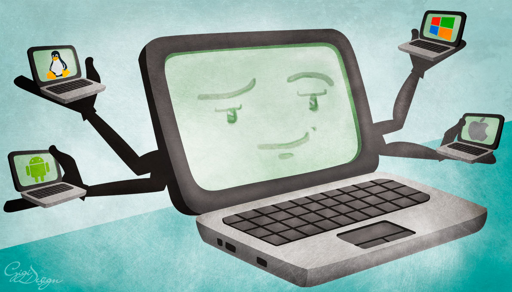
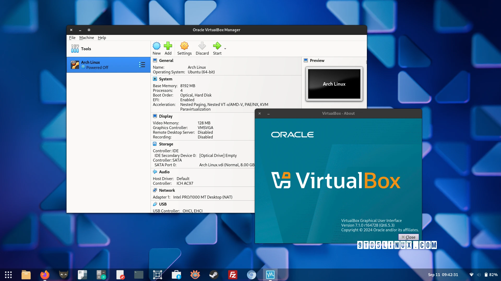
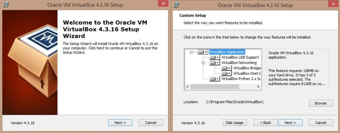
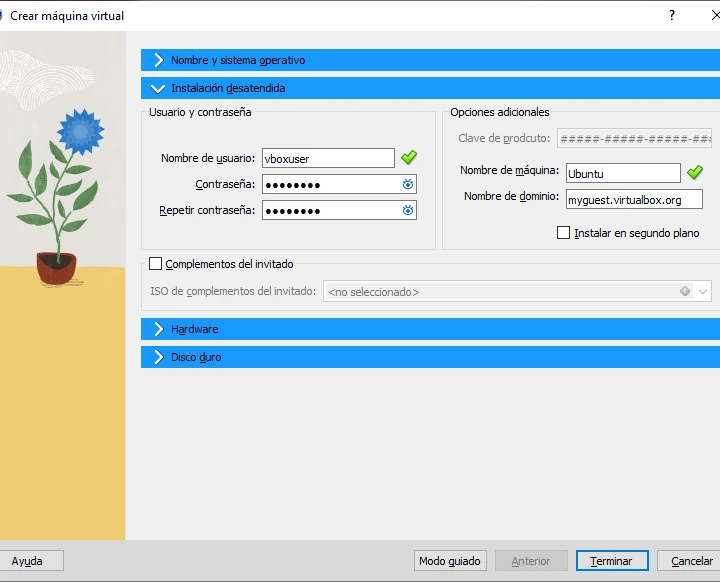
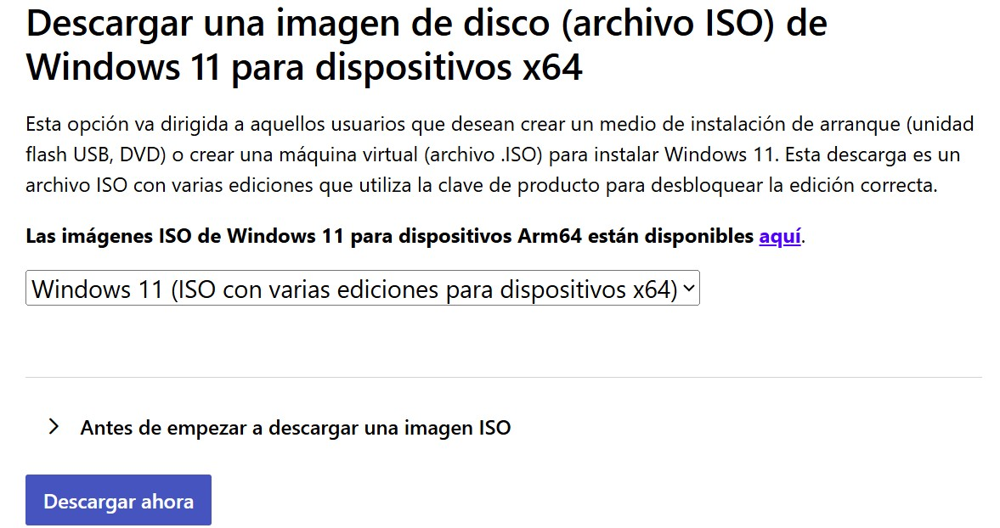
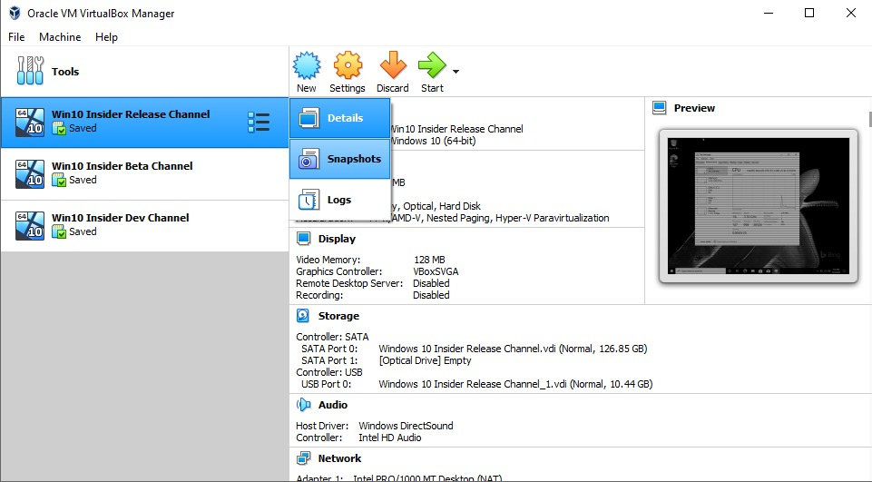

¿Qué es la virtualización?
La virtualización es una tecnología que permite crear máquinas virtuales, es decir, sistemas operativos completos que se ejecutan dentro de otro sistema operativo. Esto es especialmente útil para practicar y aprender sin necesidad de tener múltiples ordenadores físicos.
Beneficios de la virtualización:
- Permite crear múltiples entornos de práctica en un solo ordenador.
- Facilita la experimentación sin riesgo de dañar el sistema principal.
- Es ideal para aprender administración de sistemas en red.

VirtualBox como herramienta de trabajo
Una buena opción para crear y gestionar máquinas virtuales es VirtualBox, un software gratuito y de código abierto. VirtualBox es fácil de usar y compatible con una amplia variedad de sistemas operativos, lo que lo convierte en una excelente herramienta para un laboratorio de prácticas.
Ventajas de VirtualBox:
- Permite crear múltiples máquinas virtuales.
- No afecta al sistema principal.
- Facilita repetir prácticas y pruebas.

Instalación de VirtualBox
Instalar VirtualBox es similar a cualquier otro programa.
- Descargar el instalador: Visita el sitio web oficial de VirtualBox y descarga el instalador para tu sistema operativo. https://www.virtualbox.org/wiki/Downloads
- Ejecutar y aceptar opciones por defecto.
- Finalizar instalación.

Crear una máquina virtual
El primer paso para crear una máquina virtual es configurar sus características básicas. Esto incluye:
- Nombre y tipo de sistema operativo: elige un nombre descriptivo y selecciona el tipo de sistema operativo que vas a instalar (Windows, Linux, etc.).
- Memoria RAM: asigna una cantidad adecuada de memoria para que la máquina virtual funcione correctamente.
- Disco duro virtual: crea un disco duro virtual donde se instalará el sistema operativo. Puedes elegir entre diferentes formatos y tamaños según tus necesidades.

En este enlace tenéis un tutorial completo:
Instalar Windows en una máquina virtual
Una práctica habitual será instalar Windows (por ejemplo Windows Server) dentro de VirtualBox, como base para aprender administración en red.
Para realizar la instalación necesitamos una ISO (independientemente del SO). Para ello, accediendo a la página oficial del SO o realizando una simple búsqueda en Google: por ejemplo (ISO Windows 11)
https://www.microsoft.com/es-es/software-download/windows11
Una vez descargada la ISO, seguimos estos pasos:
- Montar la imagen ISO.
- Iniciar la máquina virtual.
- Seguir el asistente de instalación.
Snapshots y pruebas seguras
Los snapshots permiten guardar un estado de la máquina virtual y volver atrás si algo sale mal durante una instalación o configuración.
Ventajas de los snapshots:
- Permiten experimentar sin miedo a cometer errores.
- Facilitan la repetición de prácticas para afianzar conocimientos.
- Son ideales para probar configuraciones y soluciones a problemas.
